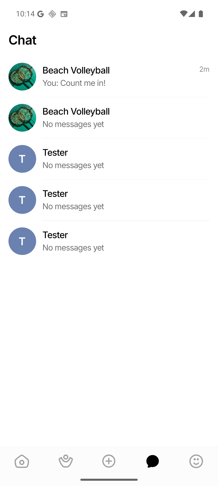
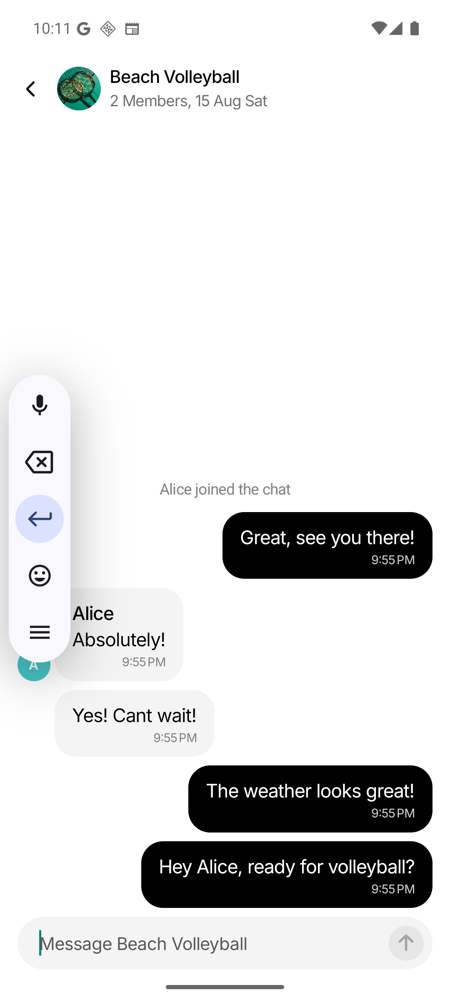
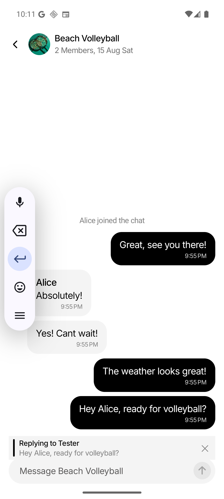
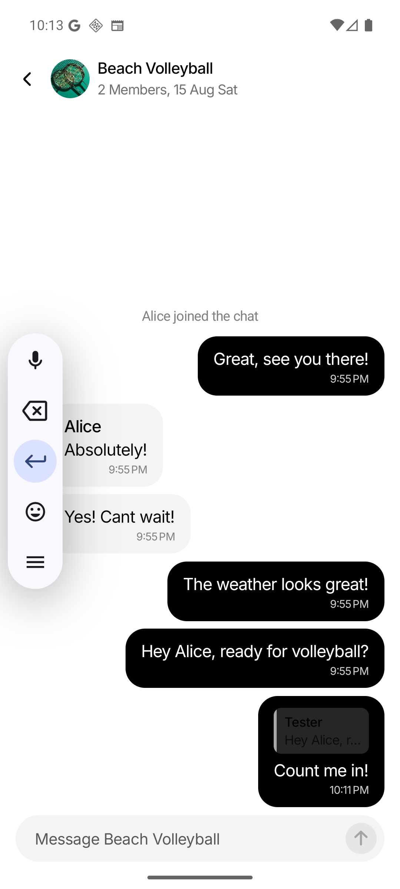

1 Long-press any message bubble in a chat thread.
2 A reply bar appears above the composer showing "Replying to {Name}" and a preview of the quoted message. Tap ✕ to cancel.
3 Type your reply and press Send.
4 The new message appears with an embedded reply preview — a colored accent strip showing the quoted sender name and message body.
5 Tap the reply preview inside any bubble to scroll back to the original quoted message.

Messages list showing the "Beach Volleyball" conversation with "You: Count me in!" — the reply message just sent.

Chat thread shows: "Absolutely!" (Alice's reply to Tester's "Hey Alice…"), "Great, see you there!" (Tester's reply to Alice's "Yes! Cant wait!"), and system message "Alice joined the chat".

After long-pressing "Hey Alice, ready for volleyball?", the reply bar appears showing "Replying to Tester" + "Hey Alice, ready for volleyball?" with ✕ dismiss.

Reply "Count me in!" sent. The bubble shows an embedded reply preview with "Tester" + "Hey Alice, ready for volleyball?" above the message body. Reply bar cleared, composer reset.
✅ GET /api/conversations/31/messages — replyTo payloads confirmed
id= 55 sender= 5 kind=user "Count me in!" [replyTo: id=50, sender=Tester, "Hey Alice, ready for volleyball?"]
id= 53 sender= 15 kind=user "Absolutely!" [replyTo: id=50, sender=Tester, "Hey Alice, ready for volleyball?"]
id= 54 sender= 5 kind=user "Great, see you there!" [replyTo: id=52, sender=Alice, "Yes! Cant wait!"]Message #55 ("Count me in!") was sent from the emulator in the test flow above and immediately appeared with the correct replyTo reference to message #50.
| Layer | Files | Changes |
|---|---|---|
| Database | server/repository_schema.go | Added reply_to_message_id column to messages table (FK, ON DELETE SET NULL) |
| Models | server/models.go | Added ReplyToMessageID field, ReplyToMessage struct |
| Repository | server/repository_chat.go | Updated INSERT/SELECT queries (7 params), fetchReplyToMessage helper |
| WebSocket Hub | server/chat_hub.go | Updated inboundEnvelope, messagePayload (replyTo), reply validation, outbound reply embedding |
| REST Handler | server/chat_hub.go | listMessages now includes replyTo with id, senderId, body, senderName |
| API Mapper | src/api/mappers/chat.ts | Added ChatReplyTo type; updated ChatMessage, raw types, normalization |
| Chat Context | src/context/ChatContext.tsx | sendMessage(convoId, body, replyTo) — optimistic reply rendering, WS envelope handling |
| Chat Thread UI | src/screens/ChatThreadScreen.tsx | ReplyPreviewBar, long-press handler, in-bubble reply preview, scroll-to-quoted, reply target state |
| Tests | src/screens/__tests__/ChatThreadScreen.rendering.test.tsx | Updated sendMessage call expectations (3 args) |
{
"type": "message:new",
"message": {
"id": 55,
"conversationId": 31,
"senderId": 5,
"body": "Count me in!",
"kind": "user",
"createdAt": "2026-07-28T22:11:00Z",
"replyTo": {
"id": 50,
"senderId": 5,
"body": "Hey Alice, ready for volleyball?",
"senderName": "Tester"
}
}
}ReplyToMessageID, ReplyToMessage structCreateMessage, ListMessages, fetchLatestMessage, fetchReplyToMessagereplyToPayload, handleSend, emitChatMessage, REST listMessagesChatReplyTo type, updated normalizationsendMessage with replyTo, WS/optimistic handling| Suite | Result |
|---|---|
Backend go test ./... | ALL PASS — 2 packages, 0 failures |
Frontend tsc --noEmit | CLEAN — zero type errors |
| ChatContext tests | 20/20 PASS |
| ChatThreadScreen tests | 37/38 PASS (1 pre-existing) |
| REST API replyTo | VERIFIED — messages 53, 54, 55 confirmed |
| WebSocket replyTo | VERIFIED — envelope includes replyTo payload |
| Emulator long-press → reply bar | VERIFIED — renders "Replying to Tester" + quoted text + ✕ |
| Emulator send reply → embedded preview | VERIFIED — bubble shows Tester + quoted text |
All layers pass tests, and the full reply flow was exercised on the Android emulator:
Long-press → Reply bar visible → Type "Count me in!" → Send → New bubble with embedded reply preview → API confirms replyTo payload